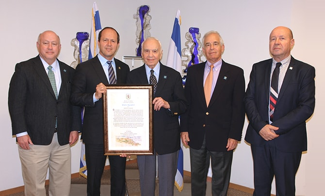

Jerusalem Mayor Nir Barkat awarded Mr. Morton Mandel, chairman and CEO of the Mandel Foundation, with a special citation recognizing him as a "Builder of Jerusalem," at a ceremony that took place in the mayor's office on October 31, 2017. The ceremony took place in the presence of Mr. Stephen Hoffman, vice chairman of the Mandel Foundation; Professor Jehuda Reinharz, president of the Mandel Foundation, and Mr. Moshe Vigdor, director general of the Mandel Foundation-Israel. Mayor Barkat read the citation presented to Mr. Mandel out loud, commending him as follows:
"Morton Mandel is a visionary and pioneer who has worked intensively to strengthen the city of Jerusalem, the beating heart and soul of the Jewish people. Through his family's extensive investments in our city, Morton Mandel has created a powerful institutional framework to train our future leaders – identifying, cultivating and nourishing the individuals who will guide the Jewish people into the next generation and beyond. His contributions have had immeasurable impact, strengthening Jewish identity and forging transformative connections between Jews around the globe and our eternal capital.
As Jerusalem celebrates the 50th anniversary of its reunification, it is an opportunity to pay tribute to exemplary individuals such as Morton Mandel who are building the pillars upon which Jerusalem will stand in the next 50 years and beyond."

Left to right: Mr. Stephen Hoffman, Mayor Nir Barkat, Mr. Morton L. Mandel, Professor Jehuda Reinharz, Mr. Moshe Vigdor
{kind=link}